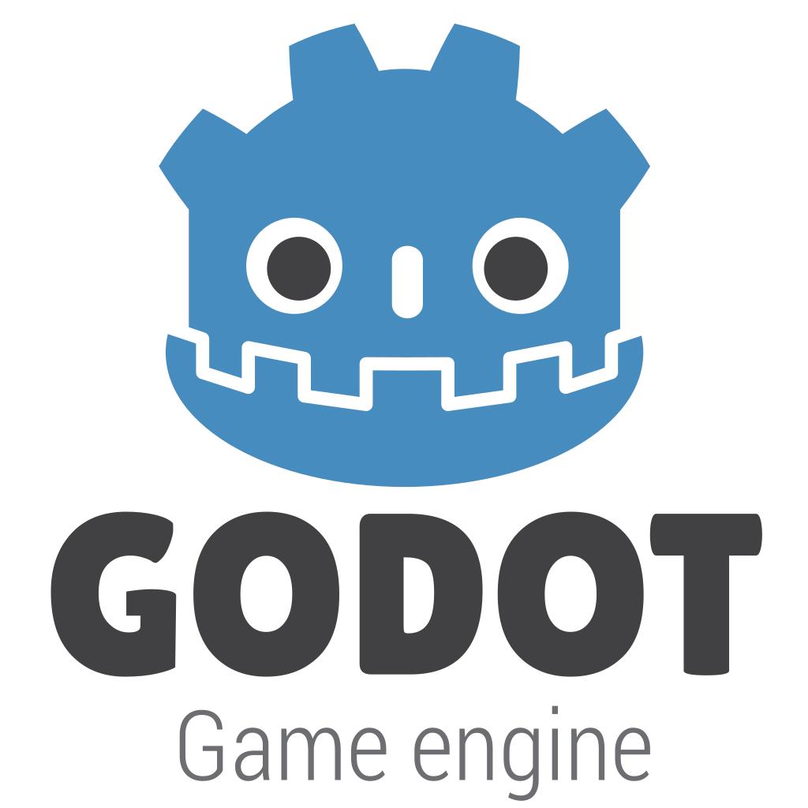

Game engines are the foremost tools that developers use to render and make their games. They software that comes loaded with helpful tools and optimizations to make programming games easier and more fun! There are many game engines out there to use, some are enterprise software that costs a lot of money to use others are free for anyone trying to get into development
Game Engines
Unity Game Engine

Pros
- Great Render Times for Games
- Built-in Asset Store to easily get art/things into game
- Cheaper than other software
- Easy to make games for different platforms
Cons
- A bit outdated
- Lots of features behind a larger paywall
- Not many updates to buggy features
- Complicated to make big windy levels in games
Godot Game Engine
Pros
- Completely free, no costs at all
- Unique programming language for beginners who arent as good at coding
- Great user interface
- Updated constantly
Cons
- 2D physics engine within it is a bit weak
- Confusing naming scheme in menus
- For amature game development (no big titles)
- Relatively new, some features still being worked on